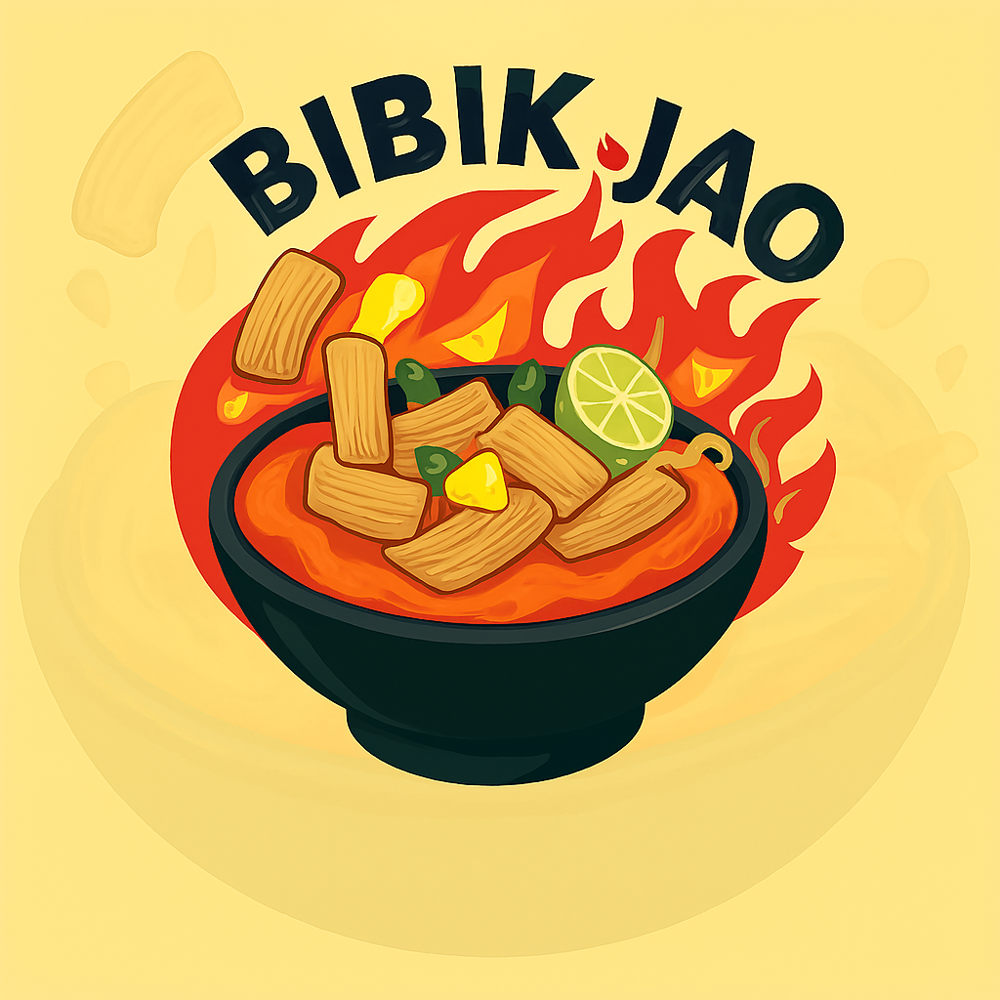
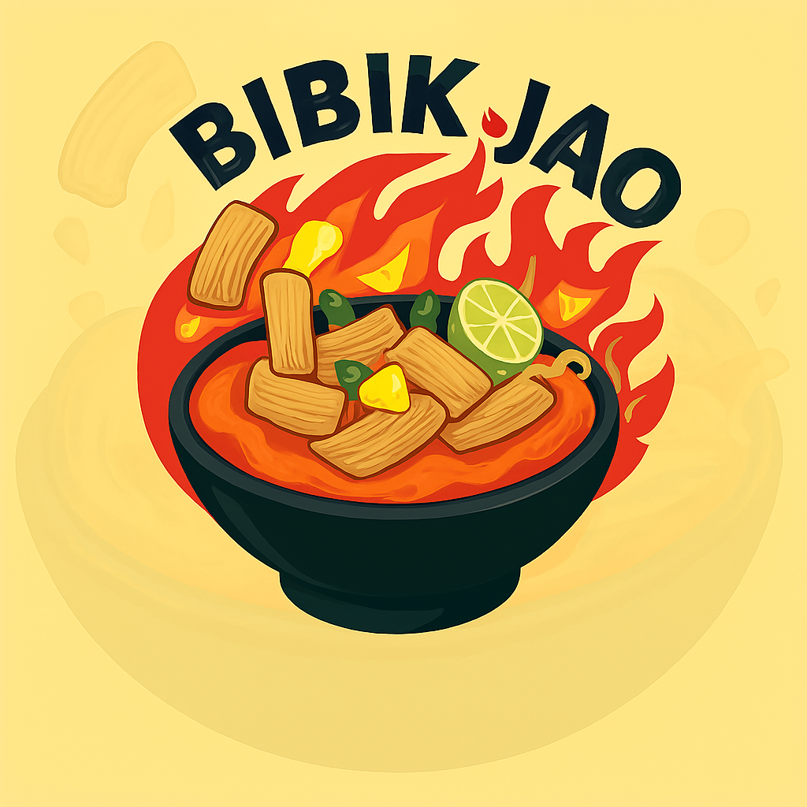

selamat datang di
|WEBSITE|
KEDAI BIBIK JAO



|WEBSITE|
KEDAI BIBIK JAO

Seblak adalah makanan khas Sunda, khususnya Bandung, yang terkenal dengan rasa gurih dan pedas . Ciri khasnya adalah penggunaan kerupuk mentah yang direbus dan dimasak dengan bumbu yang kaya rempah, terutama kencur. Seblak seringkali disajikan dengan berbagai tambahan seperti telur, sosis, sayuran, dan lain-lain.
Nama "seblak" berasal dari bahasa Sunda, "nyeblak"
, yang berarti "mengagetkan" atau "menyengat",
menggambarkan rasa pedasnya yang bisa bikin kaget.
1. Seblak terbuat dari kerupuk mentah (kerupuk yang belum digoreng) yang direbus hingga empuk.
2. Bumbu utama seblak meliputi kencur, bawang putih, bawang merah, cabai rawit, dan penyedap rasa.
3. Seblak memiliki rasa yang gurih dan pedas, dengan sensasi rasa kencur yang kuat
4. Seiring perkembangan, seblak memiliki banyak variasi, baik dari segi bahan tambahan (topping) maupun tingkat kepedasan.
5. Seblak menjadi sangat populer dan digemari oleh berbagai kalangan, tidak hanya di Bandung tetapi juga di seluruh Indonesia.
6. Seblak diduga berasal dari Bandung, Jawa Barat, dan diperkirakan muncul dari ide mengolah kerupuk yang sudah tidak segar atau keras menjadi makanan yang lezat.